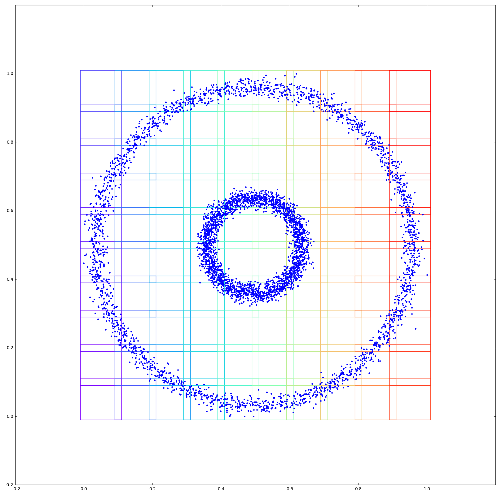

make_circles_example¶
In [1]:
from cartographer.mapper import Mapper
from cartographer.coverers import HyperRectangleCoverer
from sklearn import datasets
from sklearn.preprocessing import MinMaxScaler
data, labels = datasets.make_circles(n_samples=5000, noise=0.03, factor=0.3)
params = {'coverer__intervals' :10,
'coverer__overlap' : 0.1,
'clusterer__min_samples' : 3,
'clusterer__eps': 0.5}
m = Mapper(params=params)
scaled_data = MinMaxScaler().fit_transform(data)
m.fit(data,scaled_data)
Out[1]:
Mapper(clusterer=DBSCAN(algorithm='auto', eps=0.5, leaf_size=30, metric='euclidean',
min_samples=3, n_jobs=1, p=None),
coverer=HyperRectangleCoverer(intervals=10, overlap=0.1),
filterer=PCA(copy=True, iterated_power='auto', n_components=2, random_state=None,
svd_solver='auto', tol=0.0, whiten=False),
params=None)
In [2]:
from cartographer.visualization import html_graph
from IPython.core.display import HTML
HTML(html_graph(m,
{"labels":labels},
{"y[0]" : scaled_data[:,0],
"y[1]" : scaled_data[:,1]}))
Out[2]:
In [3]:
%matplotlib inline
import matplotlib.pyplot as plt
import matplotlib.patches as patches
from matplotlib.pyplot import cm
import numpy as np
fig = plt.figure(figsize=(20,20))
ax = fig.add_subplot(111, aspect='equal')
ax.axes.set_xlim([-0.2,1.2])
ax.axes.set_ylim([-0.2,1.2])
color=iter(cm.rainbow(np.linspace(0,1,m.coverer.lowerbounds.shape[0])))
for lb, up in zip(m.coverer.lowerbounds,m.coverer.upperbounds):
c=next(color)
ax.add_patch(patches.Rectangle(lb,*(up-lb),fill=False, edgecolor=c))
ax.plot(scaled_data[:,0],scaled_data[:,1],".");
/home/travis/miniconda/envs/cartographer/lib/python3.5/site-packages/matplotlib/font_manager.py:273: UserWarning: Matplotlib is building the font cache using fc-list. This may take a moment.
warnings.warn('Matplotlib is building the font cache using fc-list. This may take a moment.')
/home/travis/miniconda/envs/cartographer/lib/python3.5/site-packages/matplotlib/font_manager.py:273: UserWarning: Matplotlib is building the font cache using fc-list. This may take a moment.
warnings.warn('Matplotlib is building the font cache using fc-list. This may take a moment.')
